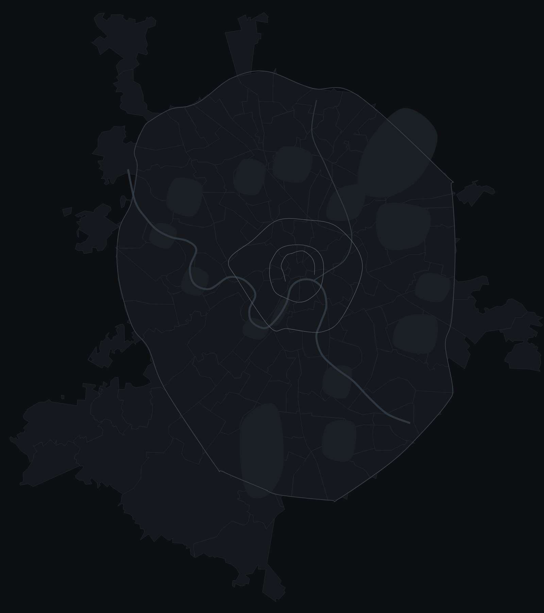

← Все выпуски индекса · Следующий: школы Москвы →
NOTA IndexВыпуск 01Август 2026288 домов
Что не сходится в классах
Мы задали 288 новым домам Москвы три вопроса, ответ на которые есть в документах. Выяснилось, что «премиум» чаще всего — просто слово, а машиномест не хватает во всех четырёх классах, даже в делюксе.
От редактора
Класс дома в России не заверяет никто. Нет ни госта, ни реестра, ни комиссии: «бизнес», «премиум» и «элит» застройщик пишет сам. Поэтому разговор о классе почти всегда превращается в спор о вкусе, а спор о вкусе выигрывает тот, у кого красивее буклет.
Мы решили не спорить. Взяли все новые дома от бизнес-класса и выше — 288 штук — и задали каждому три вопроса, на которые можно ответить цифрой: где стоит дом, куда ставить машину и сколько будет соседей. Ответов всего три: «да», «нет» и «нет данных».
Результат меня удивил. Пятьдесят один дом называет себя классом выше, чем показывают цифры. Машиномест не хватает везде. А чем дороже дом, тем реже застройщик вообще говорит, сколько их. Это не повод ничего не покупать — это повод задавать правильные вопросы. Об этом выпуск.
Елена, редактор индекса NOTA
Паркинг
Машину ставить некуда. Везде
Норма паркинга — это сколько машиномест нужно на квартиру, чтобы двор не превратился в стоянку. Рынок считает так: 0,8 места в бизнесе, 1,5 в премиуме, 2 — в элите и делюксе.
До своей нормы не дотягивает ни один класс. Типичный дом бизнес-класса даёт 0,39 места на квартиру. В премиуме и элите — 0,48, то есть одно место на две квартиры. Ближе всех делюкс — 1,36, но и это меньше двух.
Красная черта — норма класса, серая полоса — типичный дом. Шкала от 0 до 2 машиномест на квартиру.
Есть и вторая странность. Чем дороже дом, тем реже застройщик говорит, сколько в нём машиномест. В бизнес-классе цифру раскрыли шесть домов из десяти, в делюксе — меньше одного из десяти.
Сколько домов раскрыли число машиномест.
Чем дороже дом, тем реже застройщик называет число машиномест
Адрес
Премиум — это прежде всего адрес
По рыночной мерке премиум стоит внутри Третьего транспортного кольца. Бизнес — в старых границах Москвы, элит и делюкс — в центре.
Из 68 домов, которые называют себя премиумом, внутри кольца стоят восемнадцать. Остальные пятьдесят — за кольцом. Среди них есть хорошие дома, но адрес у них бизнес-класса, и сравнивать их правильнее с бизнесом — в том числе по цене.

Соседи
«Элит» на восемьсот квартир
Элит и делюкс — это не только отделка, но и число соседей. Мерка рынка: в элитном доме — до ста квартир, в делюксе — до тридцати.
Типичный дом из тех, что называют себя элитными, — 264 квартиры, в два с половиной раза больше нормы. Самые крупные — под восемьсот. Из 18 элитных домов, назвавших число квартир, норму проходят три. В делюксе картина мягче: шесть из семнадцати, а типичный дом — 46 квартир.

Дома месяца
По одному в каждом классе
Дома, где цифры говорят сами за себя. Два из четырёх пока в статусе «присмотреться»: застройщик не раскрыл паркинг, и мы проверяем.
Scala
160квартир там, где в классе обычно строят 837
Присмотреться Премиум · MR GroupФорум
1,67машиноместа на квартиру при норме 1,5 — и всего 46 квартир
Отметка Элит · ГУТАКрасный Октябрь
29квартир на Берсеневской — один из трёх элитных домов в норме
Присмотреться Делюкс · R4S GroupБольшая Никитская 16
4квартиры на весь дом
ПрисмотретьсяПортреты классов
| Класс | Домов | Типичный дом — квартир | Раскрыли паркинг | Кто строит чаще других |
|---|---|---|---|---|
| Бизнес | 133 | 837 | 80 | ПИК 12 · Основа 8 · Гранель 5 |
| Премиум | 68 | 665 | 23 | MR Group 8 |
| Элит | 43 | 264 | 9 | Sminex 3 · адреса — Хамовники и Якиманка |
| Делюкс | 44 | 46 | 4 | Sminex 6 · MR Group 4 · пятнадцать домов пока только анонсированы |
Как считаем
Три вопроса
и ни одного прилагательного
Где стоит дом — попадает ли адрес в ядро своего класса. Куда ставить машину — сколько машиномест на квартиру против нормы 0,8 / 1,5 / 2 / 2. Сколько соседей — сколько квартир против нормы или против типичного дома класса.
Ответы — только «да», «нет» и «нет данных». Класс дома определяем по самому слабому из признаков: адрес, плотность, паркинг, потолки. Цена в проверку не входит — только сверяется с классом, и расхождения идут в отдельный список.
Вместе с выпуском открыта вся база: 288 домов, все ответы и пометки. Каждую цифру можно пересчитать.